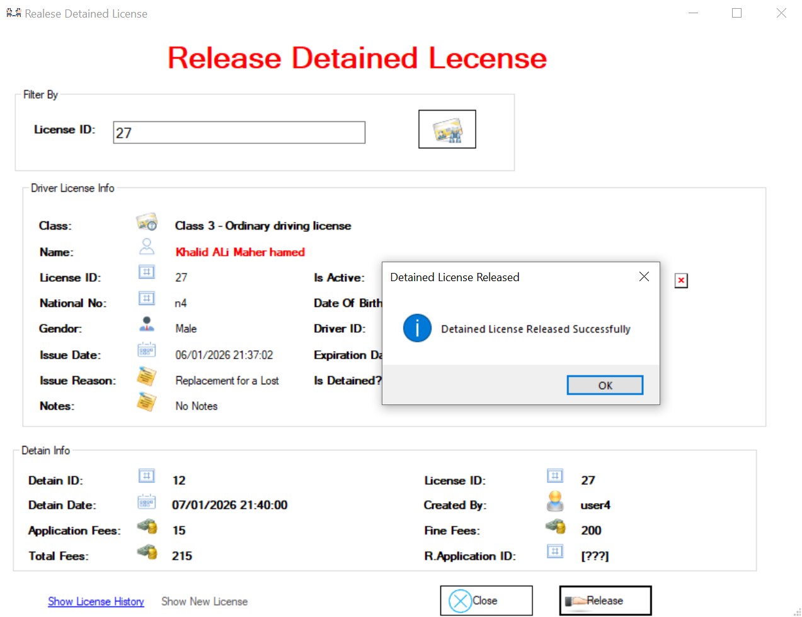

i vous souhaitez bloquer un permis de conduire, rendez-vous dans l'onglet « Release Detained License ».
Sur cet écran apparaît l'interface Release License

Sur cet écran, lorsque nous saisissons une licence introuvable, le système affiche un message d'erreur intitulé « Not Found License » et le bouton Release peut toujours être désactivé.

Sur cet écran, lorsque nous saisissons une licence inactive ou bloquée, le système affiche un message indiquant « Is Already Release or is not active » et le bouton Release peut toujours être désactivé.

Sur cet écran, si nous saisissons une licence active et qu'elle est bloquée, nous pouvons la libérer.

Sur cet écran, l'opération semble avoir été effectuée avec succès.

Et sur cet écran, on voit le permis. Sur l'étiquette « Is Detained », il sera non.

Cet écran affiche l'historique des licences : toutes les licences sont visibles, une licence est sur le point d'expirer, une autre a été déclarée perdue et une est active.